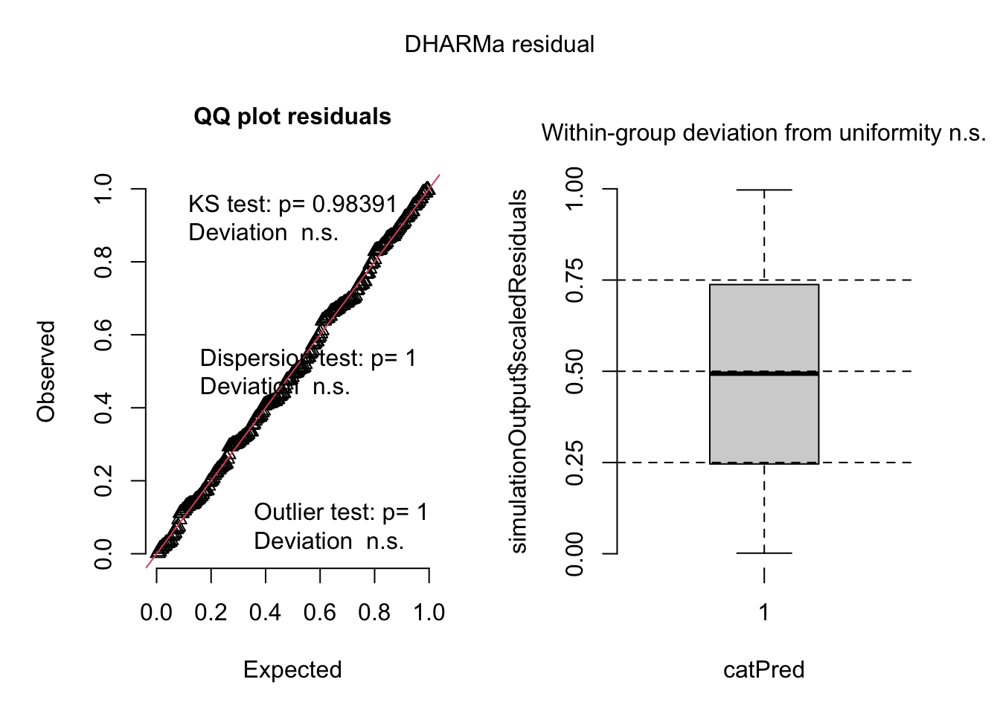

#Set up Chunk
#Read in Packages
library(tidyverse) # Includes ggplot2, dplyr, readr, tibble, etc.
library(here) # For reproducible file paths
# Data import & cleaning
library(readxl) # For reading Excel files
library(janitor) # For cleaning column names and tabulating
# Table formatting
library(flextable) # For flexible, styled tables
library(gt)
library(ggplot2)
library(scales) # modifying axis labels
library(ggeffects) # getting model predictions
library(MuMIn) # model selection
library(gtsummary)
library(DHARMa)
sst <- read_csv(here("Data", "SST_update2023.csv"))
nest_boxes <- read_csv(here("Data", "occdist.csv")) #read in my data Final
link to Github repo:https://github.com/Alex2002UC/ENVS-193DS_spring-2025_final
Problem 1. Research writing (36 points)
Problem
a. Transparent statistical methods (8 points)
What statistical tests did your co-worker use? Clearly connect the test to the part that you are addressing (e.g. “In part 1, they used _______. In part 2, they used _______.”).
In part 1, my co-worker used a Pearson’s r Correlation Test, to measure the linear relationship between distance to head water(km) and annual total nitrogen load(kg year-1) In part 2, they used a one-way ANOVA, to test whether the mean nitrogen load would change among different sources: urban land, atmospheric deposition, fertilizer, waste water treatment, and grasslands.
b. More information needed (8 points)
My coworker should include the outcomes of both the Leven’s test and the Shapiro-Wilk normality test. In this case, a one-way ANOVA was used to test whether average nitrogen load (kg year⁻¹) differs between sources: urban land, atmospheric deposition, fertilizer, waste water treatment, and grasslands. However, ANOVA relies on two key assumptions: normality of residuals and homogeneity of variances.
ONLY for onw way ANOVAAAA
-f-statistic, signifigance level, post hoc test, effect size
The Shapiro-Wilk normality test should be used to check whether the residuals from the model are approximately normally distributed. This is crucial because the validity of the ANOVA results depends on this assumption. We would ideally want all of our source varaibles to have a test statistic near 1, as that would mean the samples do fit the standarized normal. However, say that the resulting test-staitsic from the Shapiro-Wilk normality test was W=0.7 for fertilizer, then this would indicate that the residuals are not normally distribted, and that a one-way Anova may not be appropriatate to test the null hypothesis.
To confirm that there is homogeniety across the variances of urban land, atmospheric deposition, fertilizer, waste water treatment, and grasslands. Levene’s test compares the variance of nitrogen load(kg year⁻¹) among the different sources. If the output of the test is p < 0.05, we would reject the null hypothesis that there is equal varaiances between groups, however we wouldn’t know which group comaparison doesn’t have equal variance. The outcome could determine if we need more tests, or if a one-way ANOVA would not be appropraite and a different test needs to be used.
These two additional statistics would confirm whether the one-way ANOVA was appropriate and whether the results can be trusted.
Maybe:
-f-statistic and effect size Post-hoc pairwise comparisons (e.g., Tukey’s HSD) – Since the ANOVA only indicates that at least one group differs, follow-up tests are needed to identify which specific sources (e.g., fertilizer vs. urban land) have significantly different nitrogen loads.
Effect size (e.g., η² or Cohen’s f) – The p-value only tells us that a difference exists, but not how large the difference is. Reporting effect size would help quantify the practical significance of the variation in nitrogen load across sources.
c. Suggestions for rewriting (20 points)
In 1-3 sentences, write new research statements to include relevant components from parts a-b and a full test summary in parentheses to be transparent about the statistical method.
Be sure that your rewritten statements clearly delineate the biological narrative from the statistical summary. See lecture and workshop for examples of writing.
Note that your co-worker didn’t include any information about the test statistic, distribution, etc., and that you only know the p-value. For any part that you do not know, list that part with text. For example, you could write something like: “… r = correlation coefficient, p = 0.03, \(\alpha\) = significance level …”
We rejected the null hypothesis that there is no correlation between distance from headwater (km) and annual total nitrogen load (kg year-1) (p = 0.03).
We found a statistically significant correlation between distance from headwater(km) and annual total nitrogen load(kg year-1) (Pearson’s r = correlation coefficient, p = 0.03, α = significance level]), suggesting that nitrogen load changes with distance downstream.
In part 2 of the results section of the report, your co-worker has written:
We rejected the null hypothesis that there is no difference in average nitrogen load (kg year-1) between sources (urban land, atmospheric deposition, fertilizer, wastewater treatment, and grasslands) (p = 0.02).
-should I include the size differences
We found that there(INSERT SIZE OF effect size here) is a difference between average nitrogen load (kg year-1) between sources: urban land, atmospheric deposition, fertilizer, wastewater treatment, and grasslands(one-way ANOVA, F(among groups df, within groups df) = F-statistic, p = 0.02, $= significance level).
Problem 2. Data visualization (36 points)
Skills you will demonstrate
Problem
a. Cleaning and summarizing (16 points)
Create an object called sst_clean from sst. Clean and summarize the data such that you end up with a data frame like this:
sst_clean <- sst |>
clean_names() |>
mutate(
date = ymd(date),
year = year(date),
month = month(date)) |>
filter(year == c("2018", "2019", "2020", "2021", "2022", "2023")) |>
select(year, month, temp) |>
group_by(year, month) |>
summarise(mean_monthly_sst = round((mean(temp, na.rm = TRUE)), 1)) |>
mutate(year = as.factor(year)) |> #set year column as a factor
mutate(month = factor(month.abb[month], #set the month column to factor using the abbreviated month names
levels = month.abb, #the levels of the ordinal factor are set my the month abbreviations
ordered = TRUE)) |>
ungroup()
slice_sample(sst_clean, n = 5) #display 5 random rows from sst_clean# A tibble: 5 × 3
year month mean_monthly_sst
<fct> <ord> <dbl>
1 2018 Nov 17.9
2 2019 May 14.3
3 2019 Jan 14.7
4 2023 Aug 18.5
5 2023 Dec 16.2str(sst_clean) #display sst_clean data structuretibble [72 × 3] (S3: tbl_df/tbl/data.frame)
$ year : Factor w/ 6 levels "2018","2019",..: 1 1 1 1 1 1 1 1 1 1 ...
$ month : Ord.factor w/ 12 levels "Jan"<"Feb"<"Mar"<..: 1 2 3 4 5 6 7 8 9 10 ...
$ mean_monthly_sst: num [1:72] 15.1 14.3 13.5 12.8 13.6 15.5 18.2 19.6 18.2 18.4 ...b. Visualize the data (20 points)
Recreate this visualization:
ggplot(sst_clean, aes(x = month, y = mean_monthly_sst, color = year, group = year)) + # Begin ggplot with data and aesthetics mapping
geom_line(size = 1) + # Adds lines to show monthly trends for each water year
geom_point() + # Add points to represent individual data values for each month
labs(
x = "Month", #deterines x-axis name
y = "Mean Monthly Sea Surface temperature (°C)", #y-axis name
color = "Year") + #differentiates each water year by a different color
scale_color_manual(
values = c(
"2018" = "#c6dbef",
"2019" = "#9ecae1",
"2020" = "#6baed6",
"2021" = "#4292c6",
"2022" = "#2171b5",
"2023" = "#084594")) +
theme_minimal(base_size = 14) + #changing themes
theme(
panel.background = element_blank(),
panel.grid = element_blank(), #no grid
axis.ticks = element_line(color = "black"),
axis.line = element_line(color = "black"),
plot.title = element_text(hjust = 0),
legend.position = c(0.1, 0.7),
legend.background = element_blank() #no legend
)Problem 3. Data analysis (87 points)
Skills you will demonstrate
- How do year (2016 or 2019) and distance from forest edge predict Swift Parrot (Lathamus discolor) nest box occupancy?
- Is there a simpler model that explains Swift Parrot nest box occupancy, and if so, what is it?
READ THE INTRODUCTION AND METHODS BEFORE YOU START.
Problem
a. Response variable (2 points)
In 1-2 sentences, explain what the 1s and 0s mean in this data set biologically.
The 0s in this data mean that a nest box is unoccupied by a certain species: common starling, swift parrot, or tree martin. The 1s in this data mean that a nest box is occupied by whatever species is labelled in that row.
b. Purpose of study (2 points)
The authors compare nest box occupancy between 3 species: Swift Parrots, Common Starlings, and Tree Martins. In 1-2 sentences, explain the main difference between Swift Parrots and the other two species in the context of this study.
Swift Parrots are an native species of birds that are endangered due to deforestation and invasive species. In comparison, Common Starlings are an abundant introduced species and the Tree Martins are a native species that is not endangered, however, both of these species are nest box competitors for the Swift Parrots.
c. Difference in “seasons” (2 points)
The authors compare two years (that they refer to as “seasons”). In 1-2 sentences, define what those years/seasons are, and explain how they differ in the context of this study.
The two years that are referred to as breeding seasons in thi study are 2016 and 2019. In 2016, the nest boxes were newly deployed and 29 were used by Swift Parrots, in comparison, in 2019, the nest boxes had been around for three years and only 20 were used, with only five nests reused.
d. Table of models (10 points)
Make a table of all the models you will need to run. You will run 4 models: a null model, a saturated model, and two other models with different combinations of predictors.
Stuck on how to create a table? See workshop 8 for an example.
Your table should have 4 columns: (1) model number, (2) season, (3) distance to forest edge, and (4) model description.
| Model Number | Season | Distance to forest edge | Model Description |
|---|---|---|---|
| 0 | no predictors( null model) | ||
| 1 | X | X | Year + Distance(saturated model) |
| 2 | X | Year | |
| 3 | X | Distance from edge |
e. Run the models (8 points)
# model 0: null model
model0 <- glm(
sp ~ 1, # formula
data = nest_boxes_clean, # data frame
family = binomial()
)
# model 1: all predictors
model1 <- glm(
sp ~ season + edge_distance, # formula
data = nest_boxes_clean, # data frame
family = binomial()
)
# model 2: SLA and water treatment
model2 <- glm(
sp ~ season,
data = nest_boxes_clean,
family = binomial()
)
# model 3: SLA and species
model3 <- glm(
sp ~ edge_distance,
data = nest_boxes_clean,
family = binomial()
)f. Check the diagnostics (6 points)
Check your diagnostics for all models using simulated residuals from the DHARMa package.
Display the diagnostic plots for each model.
# Set up the 2x2 plot grid before plotting
par(mfrow = c(2, 2))
# Plot DHARMa residual diagnostics for each model
Model0 <- plot(simulateResiduals(model0))
Model1 <- plot(simulateResiduals(model1))
Model2 <- plot(simulateResiduals(model2))
Model3 <- plot(simulateResiduals(model3))
g. Select the best model (6 points)
Using Akaike’s Information Criterion (AIC) from the MuMIn package, choose the best model.
In text, write what the best model was (i.e. “The best model as determined by Akaike’s Information Criterion (AIC)…”).
Use the predictors and the response variable to describe the model, not the model number that you assigned.
AICc(model1,
model2,
model3,
model0) |>
# arranging output in descending order of AIC
arrange(AICc) df AICc
model1 3 226.3133
model3 2 229.6716
model2 2 236.3744
model0 1 238.8318The best model that predicts Swift Parrot nest box occupancy is Model 1 as determined by Akaike’s Information Criterion (AIC), which includes both season and distance from forest edge as predictors and has the lowest AIC (F(215.53, 212) = 27.08, p < 0.05, \(\alpha\) = 0.05).
h. Visualize the model predictions (24 points)
# Generate model predictions
model_prediction <- ggpredict(model1, terms = c("edge_distance [all]", "season"))|>
rename(season = group)
# Make sure 'sp' is numeric
nest_boxes_clean <- nest_boxes_clean |>
mutate(sp = as.numeric(as.character(sp)))
# Final plot
ggplot(nest_boxes_clean,
aes(x = edge_distance, y = sp, color = season)) +
# Raw data points
geom_point(size = 2, alpha = 0.4) +
# Prediction ribbon
geom_ribbon(data = model_prediction,
aes(x = x, y = predicted, ymin = conf.low, ymax = conf.high, fill = season),
alpha = 0.15, inherit.aes = FALSE) +
# Prediction line
geom_line(data = model_prediction,
aes(x = x, y = predicted, color = season),
size = 1.2, inherit.aes = FALSE) +
# Axis and scales
scale_y_continuous(limits = c(0, 1), breaks = c(0, 0.5, 1)) +
scale_fill_manual(values = c("2016" = "orange", "2019" = "green")) +
scale_color_manual(values = c("2016" = "orange", "2019" = "green")) +
# Theme
theme_minimal(base_size = 14) +
theme(
panel.background = element_blank(),
panel.grid = element_blank(),
axis.ticks = element_line(color = "black"),
axis.line = element_line(color = "black"),
legend.position = c(0.9, 0.6)
) +
# Labels
labs(
title = "Probability of Swift Parrot Occupation of Nest Boxes",
x = "Distance to forest edge (m)",
y = "Probability of box occupancy(%)"
)i. Write a caption for your figure. (7 points)
Include a figure number, title, description of the figure, and data citation.
Figure 1: Probability of Swift Parrots occupying nest boxes predicted by distance to forest edge and season Data collected by the Australian National University and from the “occdist.csv” package(Stojanovic, Dejan; Owens, Giselle; etc, 2021), DOI: https://datadryad.org/dataset/doi:10.5061/dryad.83bk3j9sb. The points represent the predicted probabilities of nest box occupancy at different values of the predictor “distance to forest edge(m)”(n= 232). The ribbons represent the 95% confidence intervals around model 1’s predicted probabilities, our points. The season for 2016 is represented in the orange ribbon, while the season for 2019 is represented by green ribbon.
j. Calculate model predictions (4 points)
Calculate the predicted probabilities of Swift Parrot nest box occupancy with 95% at 0 m from forest edge and 900 m from forest edge for each level in season.
Show and annotate all code. Display the output.
#calculating the predicted probaility at 0m
#Untiltimedtly 4 different predictions -can come out combined
ggpredict(model1,
terms = c("edge_distance [0, 900]", "season [2016]")) # Predicted probabilities of sp
edge_distance | Predicted | 95% CI
--------------------------------------
0 | 0.48 | 0.33, 0.64
900 | 0.12 | 0.06, 0.24ggpredict(model1,
terms = c("edge_distance [0, 900]", "season [2019]")) # Predicted probabilities of sp
edge_distance | Predicted | 95% CI
--------------------------------------
0 | 0.30 | 0.18, 0.44
900 | 0.06 | 0.03, 0.13k. Interpret your results (16 points)
Write 3-5 sentences summarizing what you found, making references to the figure you made in part h and the predictions you calculated in part j. Your summary should include your interpretation of:
- the predicted probability of occupancy at the forest edge (0 m) and farther away from the forest edge (900 m) between seasons
- the relationship between distance from forest edge and probability of occupancy
- the biology behind the trends you found - what explains the relationship between distance from forest edge and probability of Swift Parrot nest box occupancy?
Swift Parrots -
READ THE PAPER!
To understand the biology behind the trends you found, you need to read the paper and look at the figures. For which species do you see the opposite relationship between distance to forest edge and probability of occupancy?
Problem 4. Affective and exploratory visualizations (45 points)
Skills you will demonstrate
In this problem, you will demonstrate your ability to communicate about your visualization and give feedback to others. You will also demonstrate your ability to design and execute an appropriate statistical analysis for your data.
Problem 4
a. Comparing visualizations (20 points)
Compare and contrast your affective visualization from Homework 3 and the exploratory visualizations you made for Homework 2. In 1-3 sentences each, explain:
- How are the visualizations different from each other in the way you have represented your data?
In my exploratory visualization for HW-2, I created a boxplot and line graph that only displayed the statistical aspects of my data, which at this point of the quarter, provided data for only one of my groups: School Day. While I focused a lot on graphical data representation for my data on HW-2, my affective visualization focused more on contextualizing the study and indicating certain data themes. Instead of visualizing my data graphically and statistically, I used art to convey different proportions of spoons and water to represent trends I noticed in the data, rather than representing actual data points.
- What similarities do you see between all your visualizations?
I observe that in both my HW-2 and my affective visualization, I attempted to convey the trends of my data in the context of multiple different variables:time spent cooking(min), number of ingredients used, and Status of day. I did not only focus on displaying the means of my data, but also portray how differently paired variables had unique outcomes outside of time spent cooking. In the end, all of these visualizations displayed the same data and overall theme.
- What patterns (e.g. differences in means/counts/proportions/medians, trends through time, relationships between variables) do you see in each visualization? Are these different between visualizations? If so, why? If not, why not?
With only four observations at the time of HW-2, my visualization lacked a lot of data, however, I did notice that it’s a pattern in all my visualizations to focus on my “time spent cooking(min)” variable. However, in my affective visualization I made a unique pairing of varaibles: Number of dirtied dishes and Number of ingredients, which displays as number of ingredients increases, so does the number of dirty dishes.
- What kinds of feedback did you get during week 9 in workshop or from the instructors? How did you implement or try those suggestions? If you tried and kept those suggestions, explain how and why; if not, explain why not.
Professor Bui recommended that I add bowls filled with various levels of water to represent the overall trends in my data, how using certain cooking appliances resulted in more time spent cooking, as well as trying to incoporate my “Number of dishes used” variable. At the time I recieved feedback I was still in my sketching out phase, so I built upon her suggestions by symbolizing my time spent cooking in water bowls, as well as symbolized my number of dirty doshes as differently sized spoons that were next to shelves that each contained different numbers of ingredients. I incorporated her recommendations because they gave me a way to incorporate the outcomes of my data, but also have a scenic visualization, and I added beyond the recommendations so that I could include all my measured variables to hopefullt provide even more context to my future audience.